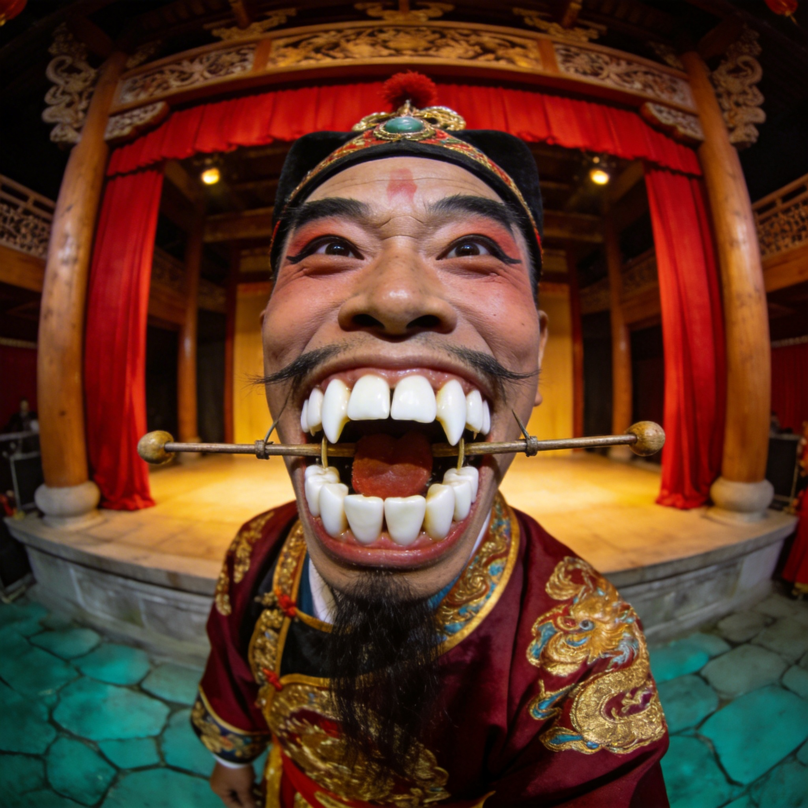
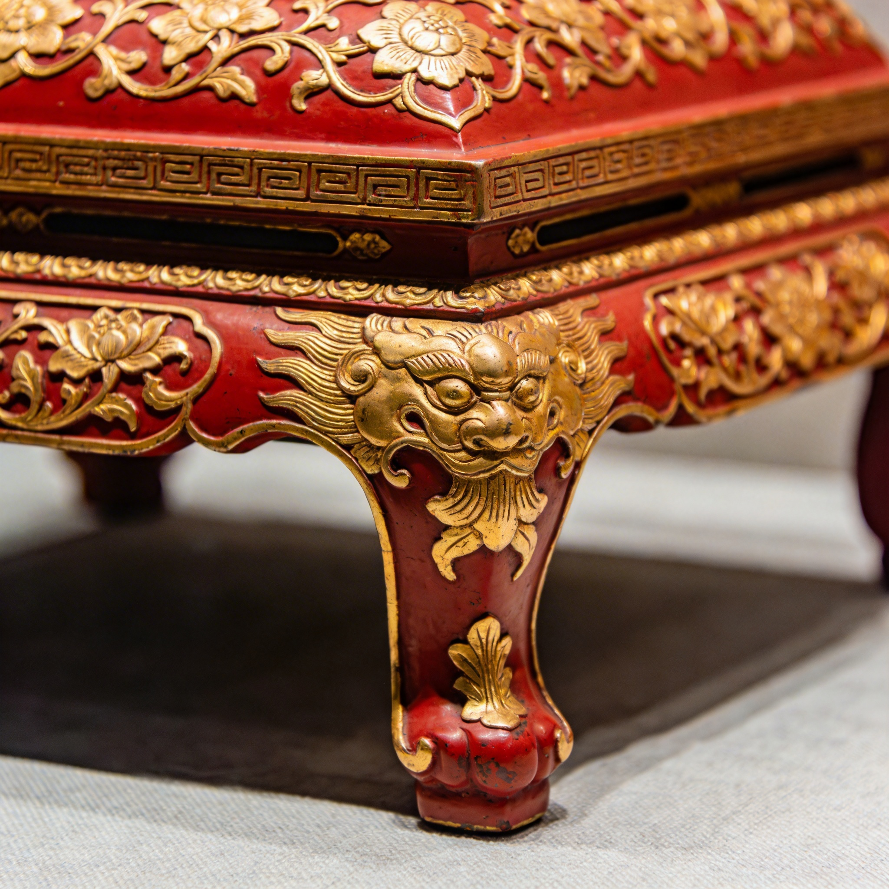
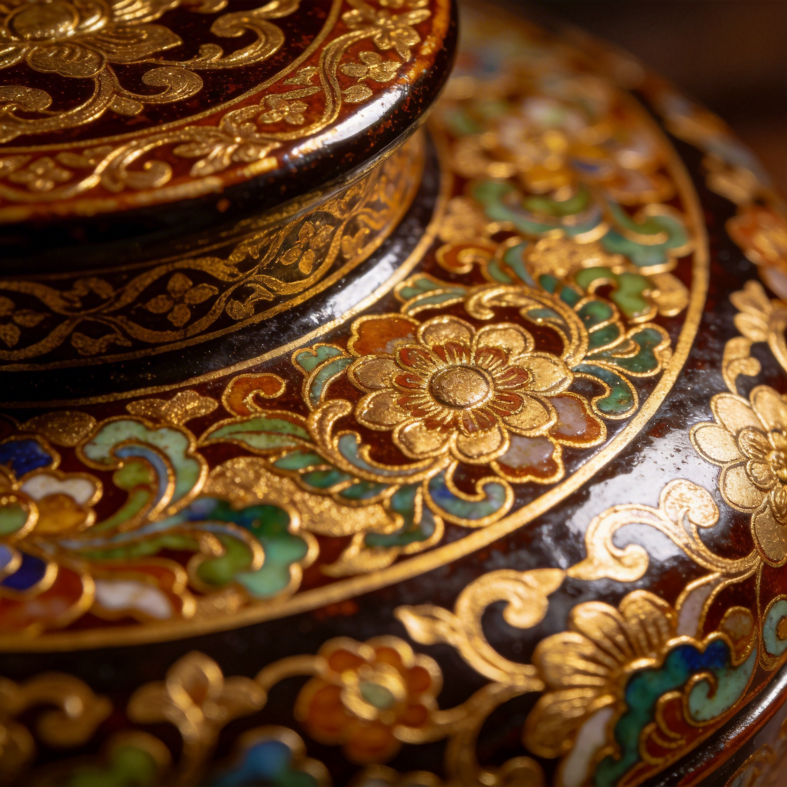
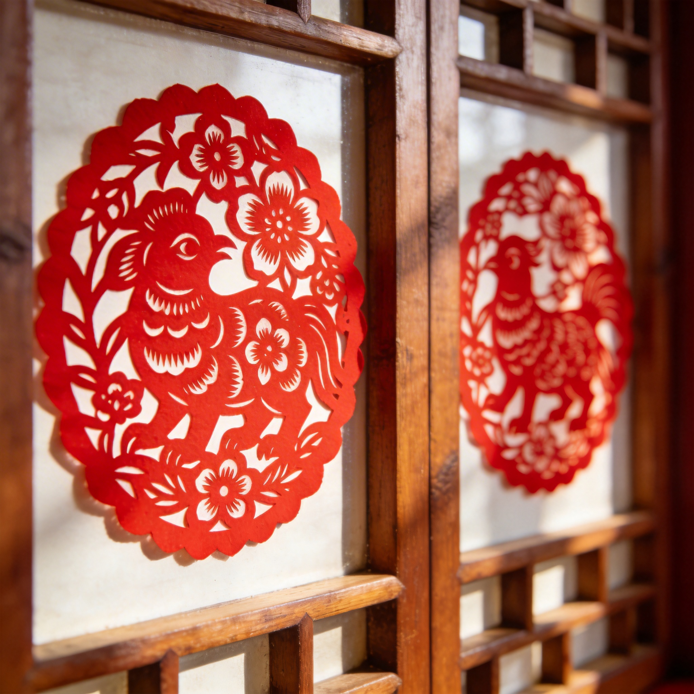

欣赏宁波独特的传统表演艺术，感受深厚的文化底蕴
奉化布龙是宁波最具代表性的传统表演艺术之一，有着800多年的历史。布龙由绸缎和竹子制作而成，舞者通过精湛的技艺，让布龙栩栩如生，展现出龙的威严和灵动。
始于南宋时期，距今已有800多年历史
造型精美，动作流畅，气势磅礴
2006年被列入第一批国家级非物质文化遗产名录

宁海耍牙是宁波宁海地区独特的民间表演艺术，表演者口含多颗野猪獠牙，通过口腔肌肉的控制，让獠牙在口中灵活转动，配合面部表情和肢体动作，展现出各种生动的造型。
源于宁海平调，已有300多年历史
口含獠牙，技艺精湛，表演生动
2007年被列入浙江省非物质文化遗产名录
宁波鱼灯舞是宁波沿海地区的传统舞蹈，表演者手持鱼形花灯，通过队形的变化和舞者的动作，模拟鱼儿在水中游动的姿态，展现出海洋文化的独特魅力。
源于宁波沿海渔民的生产生活，历史悠久
造型精美，动作流畅，寓意吉祥
被列入宁波市非物质文化遗产名录
宁波还有许多精彩的非物质文化遗产项目

宁波传统工艺，雕刻精美，漆艺精湛

宁波传统漆艺，色彩绚丽，工艺复杂
宁波传统竹艺，编织精细，造型美观

宁波传统剪纸，图案精美，寓意吉祥
宁波春节期间的传统表演艺术活动安排
春节期间城隍庙举办盛大庙会，奉化布龙、宁海耍牙等传统表演轮番上演。
宁波各地举办非物质文化遗产展演，展示传统艺术的魅力。
各社区组织舞龙舞狮表演，让居民在家门口感受传统文化。